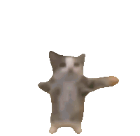

~ Special Delivery ~


Dear Michelle,
Hallo mein Liebling! I hope this letter finds you well!
You should be sleeping by the time I send you this letter, and hopefully
fully rested and awake when you read this. Currently, I'm at the CADRE
meeting and participating in the workshop while doing my photography duties!
I can not wait to bring you to these meetings with me, I really look forward to it.
I'm always thinking about you meine Liebe. I'll be free to talk to you soon.
Ich liebe und vermisse dich sehr, Akari :D
